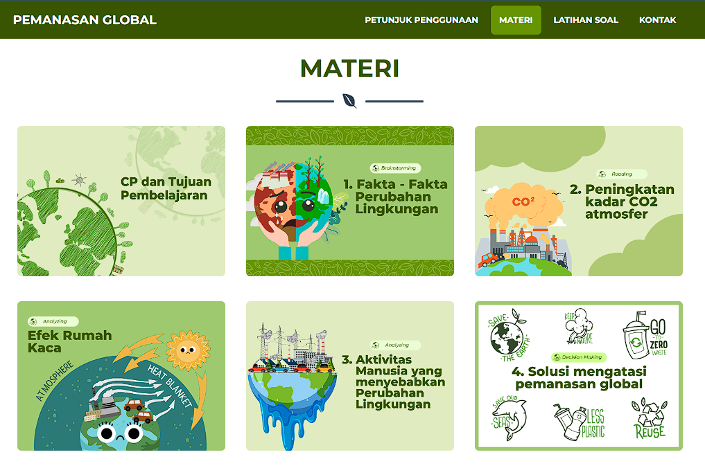
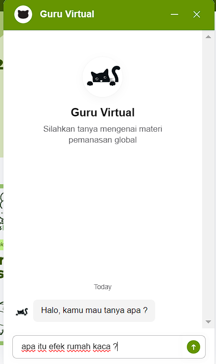
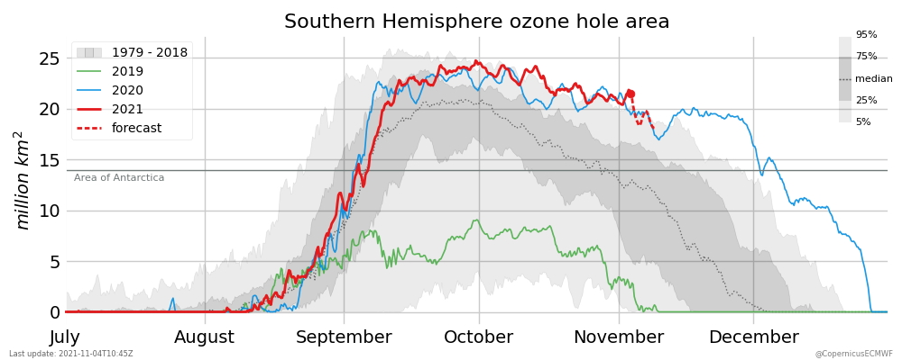

Pada bagian bar navigasi tersedia menu untuk menjuku ke bagian Petunjuk Penggunaan, Materi, Latihan Soal, dan Kontak Guru.
Materi pembelajaran

Setelah membaca petunjuk pembelajaran, pergi ke bagian materi, terdapat beberapa sub bagian seperi CP & ATP hingga 4. solusi untuk mengatasi Pemanasan Global.
Silahkan buka dari berurutan dari :
CP dan Tujuan Pembelajaran
Fakta - Fakta Perubahan Lingkungan
Peningkatan Kadar CO2 Atmosfer
Efek Rumah Kaca
Aktivitas Manusia yang Menyebabkan Perubahan Lingkungan
Solusi Mengatasi Pemanasan Global
Latihan Soal
Setelah mempelajari materi pemanasan global silahkan klik paga bagian latihan soal untuk diarahkan ke google form latihan soal pemanasan global.
Virtual Mentor
Pada media pembelajaran ini terdapat fitur virtual mentor untuk membantu kegiatan belajar secara mandiri pada bagian pojok kanan bawah layar

Kalian dapat menanyakan materi yang belum dipahami dengan mengetikkan pertanyaan secara spesifik mengenai bagian yang belum dipahami.
CP dan Tujuan Pembelajaran
CP pembelajaran fase e
Pada akhir fase E, peserta didik memiliki kemampuan untuk responsif terhadap isu-isu lobal dan berperan aktif dalam memberikan penyelesaian masalah. Kemampuan tersebut antara lain mengamati, mempertanyakan dan memprediksi, merencanakan dan melakukan penyelidikan, memproses dan menganalisis data dan informasi, mengevaluasi dan refleksi, mengkomunikasikan hasil dalam bentuk projek sederhana atau simulasi visual menggunakan aplikasi teknologi yang tersedia terkait dengan energi alternatif, pemanasan global, pencemaran lingkungan, nano teknologi, bioteknologi, kimia dalam kehidupan sehari-hari, pemanfaatan limbah dan bahan alam, pandemi akibat infeksi virus. Semua upaya tersebut diarahkan pada pencapaian tujuan pembangunan yang berkelanjutan (SDGs). Melalui pengembangan sejumlah pengetahuan tersebut dibangun pula berakhlak mulia dan sikap ilmiah seperti jujur, obyektif, bernalar kritis, kreatif, mandiri, inovatif, bergotong royong dan berkebhinekaan global.
Tujuan Pembelajaran
Mengidentifikasi fakta-fakta perubahan lingkungan sebagai dampak pemanasan global.
Menganalisis proses terjadinya efek rumah kaca dan dampaknya terhadap pemanasan global.
Mengidentifikasi aktivitas manusia yang menyebabkan perubahan lingkungan sebagai dampak pemanasan global.
Menciptakan solusi untuk mengatasi perubahan lingkungan sebagai dampak pemanasan global.
Fakta - Fakta Perubahan Lingkungan
Fakta-fakta pemanasan global dapat kita saksikan di Google Earth dengan fitur time lapse
Fakta – fakta yang ditemukan di bumi kita:
1. Peningkatan suhu permukaan laut
Berdasarkan data yang dirilis National Oceanic and Atmospheric Administration suhu samudera secara global mengalami peningkatan sebesar 0,02 °C pada bulan Agustus 2019.
Suhu air laut meningkat 2-3 °C dibandingkan dengan 3-5 juta tahun sebelumnya
Meningkatnya suhu perairan menyebabkan karang mengalami pemutihan (bleaching).
Peningkatan suhu berpengaruh pada penyebaran spesies dan juga penyakit laut.
2. Menghilangnya Salju Abadi di Puncak jaya
Satu-satunya tempat di wilayah Indonesia yang diselimuti lapisan salju berada di Pegunungan Jaya Wijaya, Papua.
Hamparan es tersebut dijuluki sebagai salju abadi yang kini tak lagi abadi.
Pada tahun 1850, gletser memiliki luasan 19,3 km2. Sedangkan pada tahun 2018 gletser tersebut hanya tersisa 0,5 km2.
Keadaan ini berdampak pada kuantitas dan kualitas air di daerah Puncak Jaya.
3. Mencairnya es di kutub
Es Antartika dan Greenland memiliki peran sebagai penutup pelindung Bumi dan lautan.
Apabila dicitrakan dari luar angkasa, es Antartika dan Greenland nampak seperti hamparan atau bintik berwarna putih cerah.
Putih merupakan warna yang dapat memantulkan gelombang atau panas dengan baik.
Perubahan kondisi gletser es di kutub dapat mempengaruhi ekosistem makhluk hidup yang hidup di daerah tersebut.
4. Kenaikan permukaan air laut
Salah satu dampak mencairnya es di kutub adalah kenaikan permukaan air laut, sebab air limpasan pencairan es tentu akan bermuara di laut.
Kenaikan permukaan air laut secara global meningkat sebesar 97 mm dengan rata-rata peningkatannya adalah 3,3 mm per tahun.
5. El Niño dan La Niña : Cuaca Ekstrem
El Niño merupakan peristiwa meningkatnya suhu permukaan laut Samudera Pasifik tropis bagian timur dan tengah di atas rata-rata normal suhu permukaan laut. Pengaruh peristiwa El Niño di wilayah Indonesia adalah curah hujan cenderung berkurang.
La Niña merupakan peristiwa menurunnya suhu permukaan laut Samudera Pasifik tropis bagian timur dan tengah di bawah rata-rata normal suhu permukaan laut. Pengaruh peristiwa La Niña di wilayah Indonesia adalah curah hujan cenderung meningkat.
Perubahan Lingkungan
Setelah membaca fakta-fakta perubahan lingkungan yang terjadi akhir-akhir ini, menurut pendapat Kalian gejala apa yang memberi petunjuk bahwa telah terjadi perubahan lingkungan?
Peningkatan Kadar CO2
Para ilmuwan melacak data akumulasi CO2 di atmosfer bumi menggunakan kurva keeling
Sumber : Global Monitoring Laboratory (trends in atmospheric carbon dioxide) 2024
Kurva Keeling adalah grafik yang menunjukkan perubahan karbon dioksida (CO2) secara musiman dan tahunan pada atmosfer Bumi, berdasarkan penelitian lanjutan yang dilakukan di Observatorium Mauna Loa di Hawaii. Grafik ini ditemukan oleh ilmuwan iklim asal Amerika, Charles David Keeling.
Peningkatan Kadar CO2
Peningkatan kadar CO2 di atmosfer telah dicatat sejak tahun 1958 oleh ilmuwan bernama Charles David Keeling.
Hal ini penting dipelajari dalam sejarah catatan CO2 yang memberi bukti kuat hubungan antara tingkat CO2 dan keadaan iklim yang menghangat.
Kandungan CO2 di atmosfer adalah hasil aktivitas manusia yang sebagian besar berasal dari penggunaan bahan bakar dari fosil baik untuk kegiatan industri maupun berkendara.
Efek Rumah Kaca
Efek Rumah Kaca
Peristiwa terperangkapnya udara hangat di Bumi dikenal dengan istilah efek rumah kaca.
Dalam keadaan normal, efek rumah kaca berfungsi untuk menjaga agar suhu antara siang dan malam tidak berbeda jauh, dan menjaga suhu bumi tetap hangat.
Jika jumlah gas rumah kaca pada atmosfer berlebihan, peningkatan suhu bumi akan terjadi secara tidak wajar.
Setelah melihat video diatas maka buatlah kelompok dengan anggota maksimal 5 orang lalu kerjakan LKPD dibawah ini!
Aktivitas Manusia yang Menyebabkan Perubahan Lingkungan
Peningkatan suhu permukaan bumi penyebabnya adalah peristiwa efek rumah kaca yang disebabkan oleh gas rumah kaca yang menumpuk pada atmosfer Bumi, salah satunya adalah gas CO2 yang banyak dihasilkan oleh aktivitas manusia. Apa saja aktivitas penghasil gas CO2?
1. Kegiatan Alih Fungsi Lahan
Alih fungsi lahan khususnya lahan hutan selain mengurangi habitat hewan, tumbuhan, bahkan mengganggu keanekaragaman hayati ternyata juga memiliki andil dalam peningkatan suhu dunia.
Alih fungsi lahan dilakukan dengan cara yang paling umum yaitu membakar lahan hutan. Hal ini menyebabkan pelepasan gas rumah kaca (CO2) dan gas karbon monoksida (CO) yang berbahaya bagi kesehatan.
2. Pembalakan liar
Selain itu pembalakan liar yang marak terjadi belakangan ini juga ikut andil dalam pengurangan populasi pohon di hutan. Pembalakan liar adalah kegiatan pemanenan pohon hutan, pengangkutan, serta penjualan kayu maupun hasil olahan kayu yang tidak sah dan tidak memiliki izin dari otoritas setempat.
3. Penggunaan Freon dalam Kehidupan Sehari-hari
Pernahkah Kalian mendengar nama Freon? Benda apa saja yang berhubungan dengan Freon? Digunakan untuk apa sajakah Freon?
Pembuatan Freon berkembang sejak tahun 1930 namun karena menimbulkan penipisan ozon, dan meningkatkan efek rumah kaca maka melalui Perjanjian Montreal yang dibuat oleh PBB pada tahun 1987 penggunaan Freon dibatasi. Mengapa demikian?
Merusak lapisan ozon

Sumber: Copernicus Climate Change Service, 2021
Selama musim semi belahan bumi selatan (Agustus - Oktober) lubang ozon di atas Antartika meningkat ukurannya, mencapai maksimum antara pertengahan September dan pertengahan Oktober. Ketika suhu tinggi di atmosfer (stratosfer) mulai meningkat di akhir musim semi belahan bumi selatan, penipisan ozon melambat, pusaran kutub melemah dan akhirnya rusak, dan pada akhir Desember tingkat ozon telah kembali normal. menurut sumber htps://atmosphere.copernicus.eu/monitoring-ozone-layer lubang ozon baru bisa sepenuhnya tertutup pada tahun 2060. Langkah apa yang bisa dilakukan agar mengurangi penipisan ozon?
4. Aktivitas kendaraan bermotor
Tahukah Kalian bahwa aktivitas kendaraan bermotor turut berkontribusi terhadap perubahan iklim?
Menurut sumber https://www.cnnindonesia.com jumlah kendaraan bermotor terus meningkat. Data dari Badan Pusat Statistik menunjukkan pada tahun 2019 populasi seluruh kendaraan di Indonesia mencapai lebih dari 133 juta unit. Lalu apa akibatnya?
Untuk mengurangi emisi gas buang yang berbahaya maka dalam mesin kendaraan bermotor dipasang alat bernama katalitik konverter. Alat ini berfungsi mengubah gas-gas beracun menjadi gas-gas yang lebih ramah lingkungan. Bagaimana konsep kerjanya?
Sebagai pelajar, bagaimana kontribusi Kalian terhadap pengurangan emisi gas buang dari kendaraan bermotor?
Solusi Mengatasi Pemanasan Global
Pemanasan global atau global warming sudah menjadi isu global, karena tidak hanya dialami atau menimpa bangsa Indonesia saja, melainkan hampir seluruh warga bumi. Solusi apa saja untuk mengatasi pemanasan global?
1. Penggunaan Energi Terbarukan yang Ramah Lingkungan
Energi terbarukan merupakan solusi untuk memenuhi kebutuhan energi listrik di Indonesia, karena ketersediaannya yang berlimpah. Tidak hanya itu, alasan pentingnya penggunaan energi terbarukan adalah lebih ramah lingkungan dibandingkan dengan sumber energi tak terbarukan Pengembangan teknologi ramah lingkungan:
Teknologi kendaraan hybrid yang menggunakan bahan bakar listrik.
Riset nanomaterial untuk produksi skala besar sel surya.
Pengembangan mesin untuk bahan bakar biogas, biodiesel, dan bahan bakar sejenisnya.
2. Gaya hidup berkelanjutan
Mengapa Kalian harus menumbuhkan gaya hidup yang lebih hemat energi?
Hampir seluruh aktivitas manusia sangat membutuhkan energi listrik saat ini. Oleh karena itu, melakukan penghematan energi menjadi sangat penting untuk dilakukan.
Kebiasaan baru yang ramah lingkungan:
bersepeda atau jalan kaki jika bepergian dalam jarak dekat, serta menggunakan transportasi umum jika bepergian dalam jarak jauh
memilih untuk membeli alat-alat elektronik yang hemat daya
meluangkan waktu senggang untuk berkebun di rumah.
3. Amati lingkungan sekitarmu!
Apakah sudah menunjang pencegahan pemanasan global? Jika sudah, kegiatan kreatif apa yang dilakukan untuk mencegah pemanasan global?